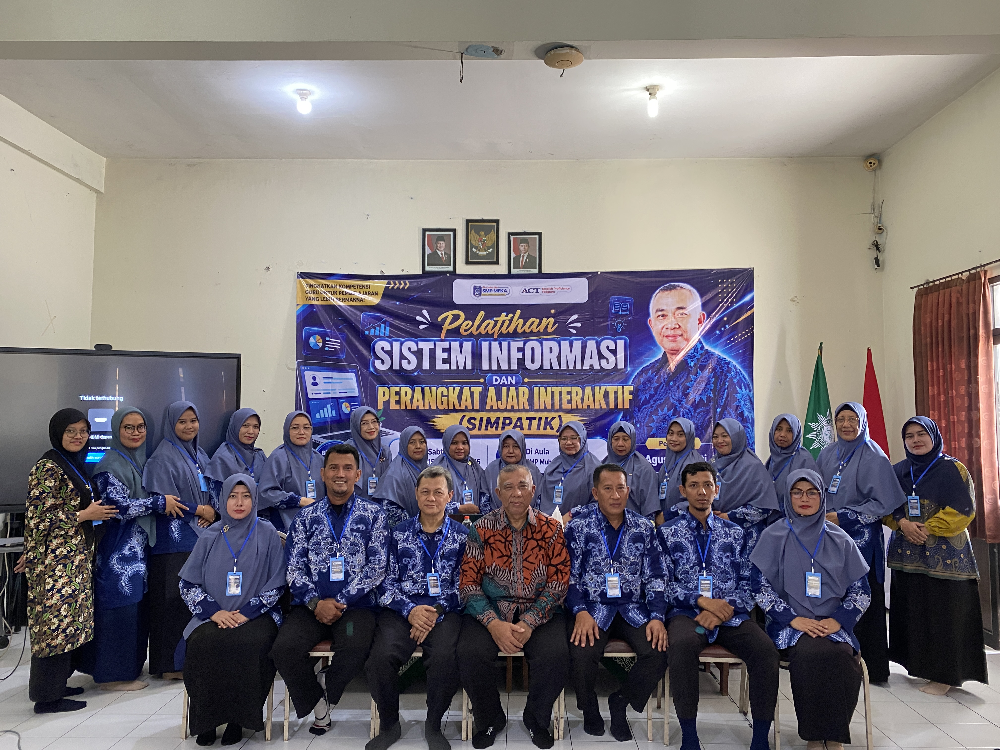

Tenaga Pendidik &
Kependidikan
Pendidik Profesional
& Berdedikasi
Membentuk
Generasi Unggul
Didukung oleh guru-guru tersertifikasi, berkompeten di bidang sains, teknologi, serta berpegang teguh pada nilai-nilai keislaman untuk membimbing potensi terbaik setiap siswa.

verified
Profesional & Tersertifikasi
Dewan Guru & Staf Pengajar
Pusat informasi resmi tenaga pendidik dan kependidikan SMP Muhammadiyah 6 Krian.
verified Guru Tersertifikasi
100%
•
school Berpengalaman &
Profesional
•
star Standar Pendidikan
Global
•
psychology Inovasi
Pembelajaran
•
Pimpinan Tertinggi
Kepala Sekolah SMP MEKA

Kepala
Sekolah SMP Muhammadiyah 6 Krian
Drs. H. Ahmad Muhajir, M.Pd
Pendidikan
Terakhir
S2 / Magister Pendidikan (M.Pd)
Kontak
Profesional
ahmad.muhajir@smpmeka.sch.id
Jabatan
/ Posisi
KEPALA SEKOLAH
Bidang
Keahlian
Manajemen Mutu & Kepemimpinan
Pimpinan
Bidang
Wakil Kepala Bidang

Sarah Laksmi, M.Kom
Waka Kurikulum

Ustadzah Laila, S.Ag
Waka Kesiswaan

Nurul Huda, S.Pd., M.Pd
Waka Sarpras

M. Farhan, S.Pd., M.M
Waka Humas
Direktori
Tenaga Pendidik
Guru & Staf

Luluk Masruroh, S.Psi.
Guru BK

Lintang Aini, S.Pd.
Guru Matematika

Yurida Nor Aula, S.Pd.
Guru PJOK & Teknologi

Yesi Safitri, S.Pd.
Guru Bahasa Indonesia

Ustadzah Fatimah, S.Ag
Guru Tahfidz & Agama

Ainur Rohmah, S.Pd.I.
Pelaksana TU